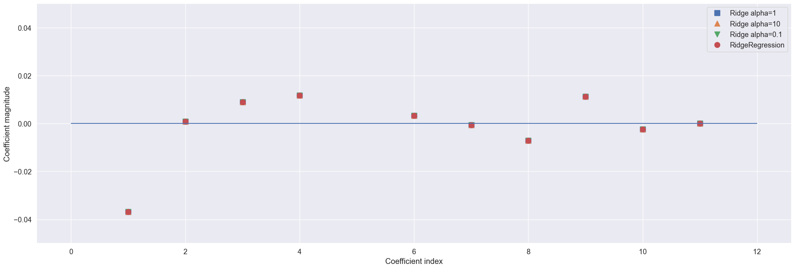

Ridge Regressor Model#
import numpy as np # type: ignore
import pandas as pd
import matplotlib.pyplot as plt
import seaborn as sns
import warnings
warnings.filterwarnings('ignore')
import plotly.express as px
import plotly.graph_objects as go
from sklearn.linear_model import Ridge
from sklearn.model_selection import train_test_split
from sklearn.linear_model import LinearRegression
from sklearn.metrics import mean_squared_error, r2_score
import os
for dirname, _, filenames in os.walk('/kaggle/input'):
for filename in filenames:
print(os.path.join(dirname, filename))
ruta = r'C:\Users\jthow\iCloudDrive\Documents\3_Maestria_Estadistica_UNINORTE\3_Tercer_Semestre\Machine_Learning\tornados.csv.zip'
df = pd.read_csv(ruta)
df['loss'] = df['loss'].replace(0, pd.NA)
df['loss'] = df['loss'].interpolate(method='linear')
df['mag'] = df['mag'].fillna(df['mag'].mean())
df.isnull().sum()
om 0
yr 0
mo 0
dy 0
date 0
time 0
tz 0
datetime_utc 0
st 0
stf 0
mag 0
inj 0
fat 0
loss 0
slat 0
slon 0
elat 0
elon 0
len 0
wid 0
ns 0
sn 0
f1 0
f2 0
f3 0
f4 0
fc 0
dtype: int64
from sklearn.model_selection import train_test_split
from sklearn.linear_model import LinearRegression
# Definir X y y (asegúrate de que ya tienes estas variables previamente definidas)
X = df[['mag', 'slat', 'slon', 'elat', 'elon', 'len', 'wid','f1', 'f2', 'f3', 'f4','loss']]
y = df['inj']
# Dividir los datos en conjunto de entrenamiento y prueba (80% entrenamiento, 20% prueba)
X_train, X_test, y_train, y_test = train_test_split(X, y, test_size=0.2, random_state=42)
ridge = Ridge().fit(X_train, y_train)
print("Training set score: {:.2f}".format(ridge.score(X_train, y_train)))
print("Test set score: {:.2f}".format(ridge.score(X_test, y_test)))
# Ver los coeficientes de cada variable en el modelo
coeficientes = pd.Series(ridge.coef_, index=X_train.columns)
# Ver el intercepto del modelo
intercepto = ridge.intercept_
# Mostrar los coeficientes y el intercepto
print("Coeficientes del modelo ridge:")
print(coeficientes)
print("\nIntercepto del modelo ridge:")
print(intercepto)
Training set score: 0.25
Test set score: 0.33
Coeficientes del modelo ridge:
mag 2.102273e+00
slat -3.674414e-02
slon 8.656891e-04
elat 8.921807e-03
elon 1.167053e-02
len 2.820254e-01
wid 3.326595e-03
f1 -6.830596e-04
f2 -7.113474e-03
f3 1.131799e-02
f4 -2.357629e-03
loss 2.912713e-07
dtype: float64
Intercepto del modelo ridge:
-0.07496725441928809
ridge10 = Ridge(alpha=10).fit(X_train, y_train)
print("Training set score: {:.2f}".format(ridge10.score(X_train, y_train)))
print("Test set score: {:.2f}".format(ridge10.score(X_test, y_test)))
# Ver los coeficientes de cada variable en el modelo
coeficientes = pd.Series(ridge10.coef_, index=X_train.columns)
# Ver el intercepto del modelo
intercepto = ridge10.intercept_
# Mostrar los coeficientes y el intercepto
print("Coeficientes del modelo ridge10:")
print(coeficientes)
print("\nIntercepto del modelo ridge10:")
print(intercepto)
Training set score: 0.25
Test set score: 0.33
Coeficientes del modelo ridge10:
mag 2.101658e+00
slat -3.674164e-02
slon 8.714776e-04
elat 8.920197e-03
elon 1.167133e-02
len 2.820485e-01
wid 3.327420e-03
f1 -6.830062e-04
f2 -7.112582e-03
f3 1.131728e-02
f4 -2.360622e-03
loss 2.912722e-07
dtype: float64
Intercepto del modelo ridge10:
-0.07414341392181334
ridge01 = Ridge(alpha=0.1).fit(X_train, y_train)
print("Training set score: {:.2f}".format(ridge01.score(X_train, y_train)))
print("Test set score: {:.2f}".format(ridge01.score(X_test, y_test)))
# Ver los coeficientes de cada variable en el modelo
coeficientes = pd.Series(ridge01.coef_, index=X_train.columns)
# Ver el intercepto del modelo
intercepto = ridge01.intercept_
# Mostrar los coeficientes y el intercepto
print("Coeficientes del modelo ridge01:")
print(coeficientes)
print("\nIntercepto del modelo ridge01:")
print(intercepto)
Training set score: 0.25
Test set score: 0.33
Coeficientes del modelo ridge01:
mag 2.102334e+00
slat -3.674439e-02
slon 8.651101e-04
elat 8.921968e-03
elon 1.167045e-02
len 2.820231e-01
wid 3.326512e-03
f1 -6.830649e-04
f2 -7.113563e-03
f3 1.131806e-02
f4 -2.357329e-03
loss 2.912712e-07
dtype: float64
Intercepto del modelo ridge01:
-0.07504966531273394
pip install --upgrade seaborn
Requirement already satisfied: seaborn in c:\users\jthow\miniconda3\envs\ml_venv\lib\site-packages (0.13.2)
Requirement already satisfied: numpy!=1.24.0,>=1.20 in c:\users\jthow\miniconda3\envs\ml_venv\lib\site-packages (from seaborn) (1.26.0)
Requirement already satisfied: pandas>=1.2 in c:\users\jthow\miniconda3\envs\ml_venv\lib\site-packages (from seaborn) (2.1.1)
Requirement already satisfied: matplotlib!=3.6.1,>=3.4 in c:\users\jthow\miniconda3\envs\ml_venv\lib\site-packages (from seaborn) (3.8.0)
Requirement already satisfied: contourpy>=1.0.1 in c:\users\jthow\miniconda3\envs\ml_venv\lib\site-packages (from matplotlib!=3.6.1,>=3.4->seaborn) (1.2.0)
Requirement already satisfied: cycler>=0.10 in c:\users\jthow\miniconda3\envs\ml_venv\lib\site-packages (from matplotlib!=3.6.1,>=3.4->seaborn) (0.12.1)
Requirement already satisfied: fonttools>=4.22.0 in c:\users\jthow\miniconda3\envs\ml_venv\lib\site-packages (from matplotlib!=3.6.1,>=3.4->seaborn) (4.43.1)
Requirement already satisfied: kiwisolver>=1.0.1 in c:\users\jthow\miniconda3\envs\ml_venv\lib\site-packages (from matplotlib!=3.6.1,>=3.4->seaborn) (1.4.5)
Requirement already satisfied: packaging>=20.0 in c:\users\jthow\miniconda3\envs\ml_venv\lib\site-packages (from matplotlib!=3.6.1,>=3.4->seaborn) (23.2)
Requirement already satisfied: pillow>=6.2.0 in c:\users\jthow\miniconda3\envs\ml_venv\lib\site-packages (from matplotlib!=3.6.1,>=3.4->seaborn) (10.0.1)
Requirement already satisfied: pyparsing>=2.3.1 in c:\users\jthow\miniconda3\envs\ml_venv\lib\site-packages (from matplotlib!=3.6.1,>=3.4->seaborn) (3.1.1)
Requirement already satisfied: python-dateutil>=2.7 in c:\users\jthow\miniconda3\envs\ml_venv\lib\site-packages (from matplotlib!=3.6.1,>=3.4->seaborn) (2.8.2)
Requirement already satisfied: importlib-resources>=3.2.0 in c:\users\jthow\miniconda3\envs\ml_venv\lib\site-packages (from matplotlib!=3.6.1,>=3.4->seaborn) (6.1.1)
Requirement already satisfied: pytz>=2020.1 in c:\users\jthow\miniconda3\envs\ml_venv\lib\site-packages (from pandas>=1.2->seaborn) (2023.3)
Requirement already satisfied: tzdata>=2022.1 in c:\users\jthow\miniconda3\envs\ml_venv\lib\site-packages (from pandas>=1.2->seaborn) (2023.3)
Requirement already satisfied: zipp>=3.1.0 in c:\users\jthow\miniconda3\envs\ml_venv\lib\site-packages (from importlib-resources>=3.2.0->matplotlib!=3.6.1,>=3.4->seaborn) (3.17.0)
Requirement already satisfied: six>=1.5 in c:\users\jthow\miniconda3\envs\ml_venv\lib\site-packages (from python-dateutil>=2.7->matplotlib!=3.6.1,>=3.4->seaborn) (1.16.0)
Note: you may need to restart the kernel to use updated packages.
[notice] A new release of pip is available: 25.0.1 -> 25.1
[notice] To update, run: python.exe -m pip install --upgrade pip
import matplotlib.pyplot as plt
import seaborn as sns
import seaborn as sns
sns.set(font_scale=1.2)
# Establecer el tamaño de la fuente
sns.set(font_scale=1.2)
# Crear la figura
plt.figure(figsize=(25, 8))
# Graficar los coeficientes para diferentes modelos
plt.plot(ridge.coef_, 's', label="Ridge alpha=1", markersize=10) # Tamaño de marcador aumentado
plt.plot(ridge10.coef_, '^', label="Ridge alpha=10", markersize=10)
plt.plot(ridge01.coef_, 'v', label="Ridge alpha=0.1", markersize=10)
plt.plot(ridge01.coef_, 'o', label="RidgeRegression", markersize=10)
# Ajustar las etiquetas y las líneas de referencia
plt.xlabel("Coefficient index")
plt.ylabel("Coefficient magnitude")
# Línea horizontal en y = 0 para visualización
plt.hlines(0, 0, len(ridge01.coef_))
# Ajustar el límite del eje Y
plt.ylim(-0e3, 0e3) # Ajusta según el rango de los coeficientes (puedes modificar esto)
# Cambiar el eje Y a una escala logarítmica si la disparidad es muy grande
# plt.yscale('symlog') # Descomenta esta línea si quieres usar una escala logarítmica
# Agregar la leyenda
plt.legend()
# Mostrar el gráfico
plt.show()

Metricas Ridge Regressor#
# ------------------------
# Paso 1: Importar los paquetes necesarios
# ------------------------
import numpy as np
import pandas as pd
from sklearn.linear_model import Ridge
from sklearn.model_selection import GridSearchCV
from sklearn.pipeline import Pipeline
from sklearn.preprocessing import StandardScaler
from sklearn.metrics import mean_absolute_percentage_error, mean_squared_error, r2_score
from statsmodels.stats.diagnostic import acorr_ljungbox
from scipy.stats import jarque_bera
from joblib import dump, load
from time import time
# ------------------------
# Paso 2: Cargar los datos
# ------------------------
# Asegúrate de que esta parte sea correcta para tu caso
# X_train, X_test, y_train, y_test = ...
# ------------------------
# Paso 3: Definir el pipeline y el grid de hiperparámetros
# ------------------------
# Definir el pipeline con un escalador y el modelo Ridge
pipe_ridge = Pipeline([
('scaler', StandardScaler()), # Normalización de los datos
('ridge', Ridge()) # Modelo Ridge
])
# Definir el grid de hiperparámetros para Ridge
param_grid_ridge = {
'ridge__alpha': [0.01, 0.1, 1, 10, 100] # Valores de penalización
}
# ------------------------
# Paso 4: Entrenar el modelo Ridge con GridSearchCV
# ------------------------
# Crear el objeto GridSearchCV
grid_ridge = GridSearchCV(pipe_ridge, param_grid_ridge, cv=5, n_jobs=-1, scoring='r2')
# Medir el tiempo de entrenamiento
start_time = time()
grid_ridge.fit(X_train, y_train)
training_time_ridge = time() - start_time
# Guardar el modelo entrenado
dump(grid_ridge, 'grid_ridge.joblib')
# ------------------------
# Paso 5: Hacer predicciones con el mejor modelo
# ------------------------
y_pred_ridge = grid_ridge.best_estimator_.predict(X_test)
# ------------------------
# Paso 6: Calcular las métricas del modelo
# ------------------------
# Métricas
mape_ridge = mean_absolute_percentage_error(y_test, y_pred_ridge)
rmse_ridge = np.sqrt(mean_squared_error(y_test, y_pred_ridge))
r2_ridge = r2_score(y_test, y_pred_ridge)
# Ljung-Box p-value
lb_p_value_ridge = acorr_ljungbox(y_test - y_pred_ridge, lags=[10], return_df=True)['lb_pvalue'].iloc[0]
# Jarque-Bera p-value
jb_p_value_ridge = jarque_bera(y_test - y_pred_ridge)[1]
# ------------------------
# Paso 7: Crear DataFrame con los resultados
# ------------------------
resultados_ridge = pd.DataFrame({
'Modelo': ['Ridge Regressor optimizado (GridSearchCV)'],
'MAPE': [f"{mape_ridge:.2f}"],
'RMSE': [f"{rmse_ridge:.2f}"],
'R Cuadrado': [f"{r2_ridge:.2f}"],
'Ljung-Box p-value': [f"{lb_p_value_ridge:.2f}" if 'lb_p_value_ridge' in locals() else None],
'Jarque-Bera p-value': [f"{jb_p_value_ridge:.2f}"],
'CPU time (s)': [round(training_time_ridge, 2)]
})
# ------------------------
# Paso 8: Mostrar los resultados
# ------------------------
print("Métricas para el modelo Ridge Regressor:")
display(resultados_ridge)
Métricas para el modelo Ridge Regressor:
| Modelo | MAPE | RMSE | R Cuadrado | Ljung-Box p-value | Jarque-Bera p-value | CPU time (s) | |
|---|---|---|---|---|---|---|---|
| 0 | Ridge Regressor optimizado (GridSearchCV) | 8943370414620937.00 | 18.83 | 0.33 | 0.93 | 0.00 | 5.83 |